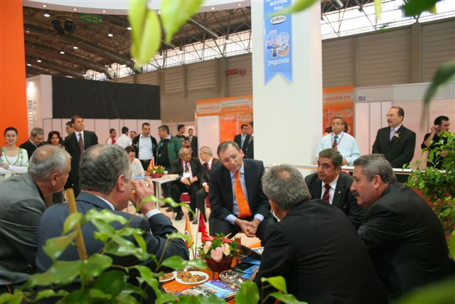
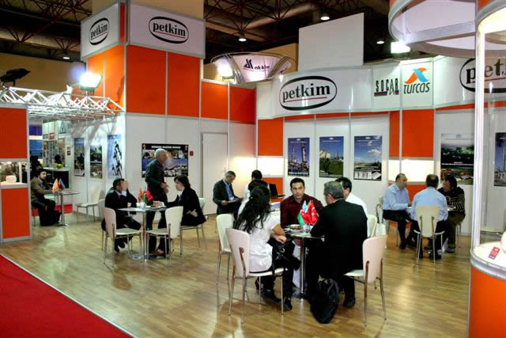
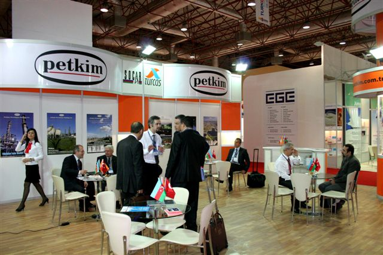
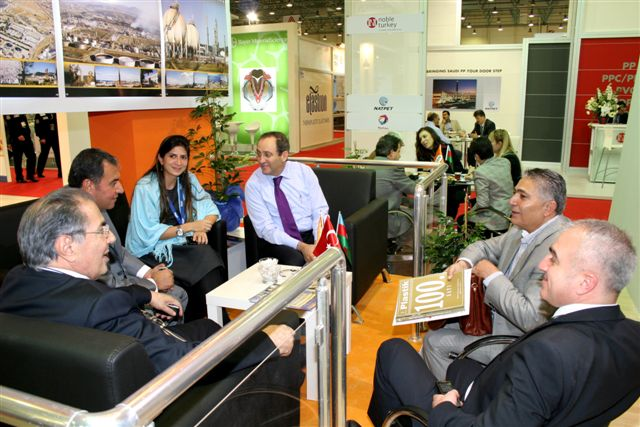

Fairs
IPAF-2008
11th İzmir International Plastic and Package Technologies and Products Fair were carried out in İzmir Kültürpark International Expertise Fair Area on 4th May, 2008.
This year, 503 corporations from 30 country consist of 225 corporations from Türkiye, 35 corporations from Italy, 31 corporations from Germany, 25 corporations from Taiwan, 15 corporations from Korean attended to IPAF. In IPAF which is one of the international fair in related sector were introduced to Packaging Machines, Filling Machines, Packaging Support and Automation Systems, Packaging Materials, Packaging Auxiliary Materials.
It was informed about not only technical information but also specific information to attendant by sector experts. Mevlüt Çetinkaya from Petkim gave a presentation about “Plastic Pure Materials Market Development Trend in Türkiye”.
TURKCHEM 2008
30 OCTOBER -02 NOVEMBER 2008 Istanbul
Petkim attended to TURKCHEM 2008 CHEMISTRY INDUSTRIAL GROUP FAIR was coordinated by Chemistry Sector Platform and Members in Istanbul World Trade Center New Fair Complex on 30th October-02nd November 2008.
In fair composed of three main topics as Chemicals, Laboratories and Technologies were exhibited. Raw materials and chemicals, Final Products, Laboratories Chemical Materials and Devices, Chemistry Industry Machines and Equipments, Water Conditioning, Refining, Chemicals Facility and Equipments, Measurement Control Devices and Process Automation Systems, Packaging, Recycling and Technologies.
Corporations from 70 different countries attended to Chemistry Industry Group Fair, about 15 thousand people visited the Fair. Petkim welcomed visitors through 4 days with its Export Group stuff.
Through the fair, we compared notes to the corporations who visited our stand for getting feed-back and informed them about products and about technical qualification and sale of their concerned products.
 PlastAvrasya-2008
27-30 NOVEMBER 2008 Istanbul
Totally 1001 corporation or their representatives from 42 countries attended to 18th International Istanbul Plastic Industry Fair which carried out in Tüyap Fair and Assembly Center. PLAST AVRASYA Fair which made in 27th-30th November 2008 is one of the important trade activities of Europe area.
Last technological innovations in the world, plastic machines and supplies, mould technologies, plastic products, raw materials and additives, plastic packaging technologies, rubber technologies and its products, control systems, hydraulic and pneumatics equipments, helping equipments and innovations in packaging technologies were exhibited in PLASTAVRASYA ISTANBUL 2008 Fair which enable to attendant to know, compare and select the machines and materials for their investment in rubber and packaging industry, Through the fair, employee in charge in Petkim stand compared notes to the corporations who visited our stand for getting feed-back and informed them about products and about technical qualifications and sale of their concerned products. Plastavrasya 2008 was accomplished generally; meeting to our customers who we communicate to only by phone satisfied both Petkim personnel and our customers.
